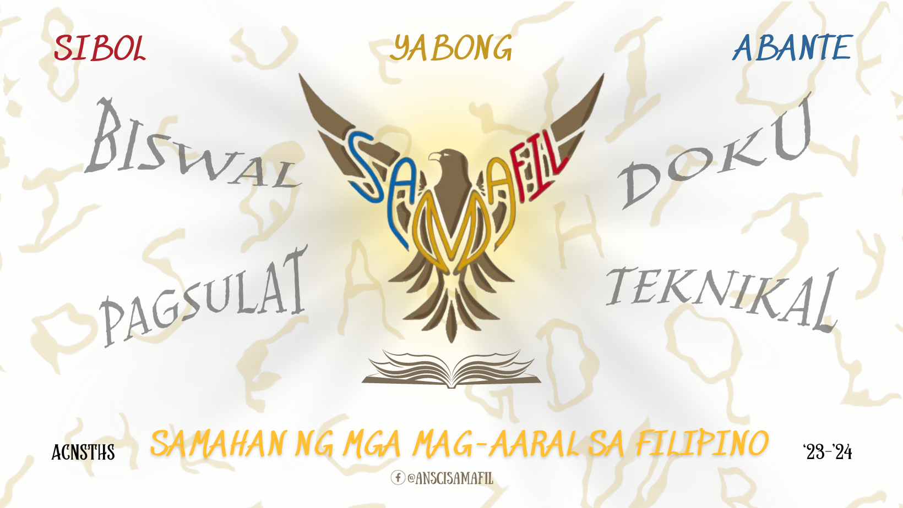

𝘽𝙖𝙜𝙤𝙣𝙜 𝙏𝙖𝙤𝙣, 𝘽𝙖𝙜𝙤𝙣𝙜 𝙈𝙪𝙠𝙝𝙖 🦅
Matapos ang ilang araw ng paghahanda at paglikha, ipinagmamalaki ng aming samahan, kasabay ng pagsibol ng bagong taon, ay ang paglunsad ng pinakabagong mukha ng Samahan ng mga Mag-aaral sa Filipino. Tunghayan at kilalanin ang kumiteng nagbigay-buhay sa naturang sining, at alamin ang mga pangunahing kahulugan sa likod ng tatak na ito na sumasalamin sa mga kinatawan ng buong samahan.
Ipinapahayag ng SaMaFil ang taos-pusong pasasalamat sa bawat miyembrong naging karamay at tulay upang maisakatuparan ang malaking hakbang na ito. Gayundin ang pagpapasalamat ng buong SaMaFil sa aming gurong tagapayong si Bb. Chin-Chin Salazar para sa kanyang walang-sawang paggabay sa samahan at sa mga miyembro nito para sa kanilang patuloy at walang kapantay na pagsuporta.
Manigong bagong taon, at maligayang pag-abante, Anscians! 💛
Likha ng: Biswal na Kumite
Pinangunahan nina: Aira Nicole Manzan, Margarette Rabaca, at Alodie Sherika Sibal
Kapsyon ni: France Montojo
Back